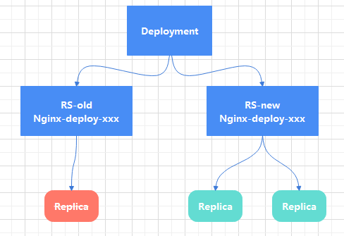

安装
- 准备机器，4台机器分别为：
- Rancher Server ,2核8G内存
- k8s master，2核4G
- k8s worker01，2核4G
- k8s worker02，2核4G
- 安装docker
在RancherServer上安装docker，可以设置自己的阿里云镜像加速
1 2 3 4 5[root@rancher_server ~]# yum update && yum makecache [root@rancher_server ~]# yum install -y yum-utils [root@rancher_server ~]# yum-config-manager --add-repo https://download.docker.com/linux/centos/docker-ce.repo [root@rancher_server ~]# yum install -y docker-ce-18.09* [root@rancher_server ~]# docker run -d --restart=unless-stopped --privileged -p 80:80 -p 443:443 rancher/rancher
安装完rancherServer后，通过网页访问rancher,添加k8s集群。
登录：
- 创建集群，选择自定义模式
- 选择k8s master主机对应的模块，然后复制脚本到对应的机器中直接执行。
- k8s主节点装完后，开始装两台worker节点：
- 查看安装成功状态

- 在集群中创建一个项目命名LAB，和命名空间Test
- 进入项目LAB中，点击部署服务，填入nginx的镜像,映射端口(80->30001)，pod的数量，命名空间，然后点击下方启动按钮
- 查看pod服务状态：
- 然后在浏览器使用集群中任意主机地址访问300001端口都会看到nginx页面
前世，Borg项目
- 奇数个BorgMaster节点，请求分发给Borglet
- Paxos作为数据存储
- scheduler任务调度器，负责把任务写入Paxos
kubernetes组件
- APISERVER,服务访问同一入口
- ControllerManager，维持副本期望数量
- Scheduler,复制接受任务，选择合适的节点进行分配任务
- ETCD,键值对数据库，存储持久化K8S集群的所有重要信息
- Kubelet，直接跟容器引擎交互实现容器的生命周期
- Kube-proxy，负责写入规则到iptables，ipvs实现服务映射访问
- COREDNS,为集群中的SVC创建一个IP域名的映射关系解析
- DASHBOARD, 给K8S集群提供一个B/S结构的访问体系
- ingress controller,官方只能实现四层代理，ingress可以实现七层代理
- federation，提供一个跨集群中心多K8S统一管理功能
- prometheus，提供K8S集群的监控能力
- ELK,提供K8S集群日志同一分析接入平台
Pod
- 自助式Pod Pod退出了，Pod不会被创建
- 管理器管理的Pod，在控制器的生命周期里，始终维持Pod的副本数目
-
RS,RC：ReplicaSet 替代 ReplicationController
rs.yaml
1 2 3 4 5 6 7 8 9 10 11 12 13 14 15 16 17 18 19 20 21 22apiVersion: extensions/v1beta1 kind: ReplicaSet metadata: name: frontend spec: replicas: 3 selector: matchLabels: tier: frontend template: metadata: labels: tier: frontend spec: containers: - name: myapp image: hub.zoukun.net/myapp:v1 env: - name: GET_HOSTS_FROM value: dns ports: - containerPort: 80当执行：
1[root@k8s-master]# kubectl label pod frontend-m8hpc tier=frontend1 --overwrite=True修改标签后，发现有rs生产的pod会保持原来的副本数，而根据新的标签生成一个新的Pod
同理当执行
1kubectl delete rs --all只会删除frontend标签的pod，frontend1标签的Pod不会被删除
-
deployment
- 定义Deployment来创建Pod和ReplicaSet，用ReplicaSet来管理Pod
- 滚动升级和回滚应用
 - 扩容缩容
- 暂停和继续
1 2 3 4 5 6 7 8 9 10 11 12 13 14 15 16apiVersion: extensions/v1beta1 kind: Deployment metadata: name: nginx-deployment spec: replicas: 3 template: metadata: labels: app: nginx spec: containers: - name: nginx image: nginx:1.7.9 ports: - containerPort: 80 -
HPA， Horizontal Pod Autoscaling 依据资源收集模块，根据资源的消耗情况，自动扩缩容
-
StatefulSet
- 稳定的持久化存储
- 稳定的网络标志，HostName和PodName
- 有序部署，有序扩展
-
DaemonSet
-
Job, Cronjob
-
- 服务发现
- Pod协同
网络通讯模式
资源清单
- 名称空间级别，kubeadm 安装K8S系统组件默认在kube-systme名称空间中，默认名称空间是default，kubectl get pod -n default
- 工作负载型资源(workload): Pod,ReplicaSet,Deployment,StatefulSet，DaemonSet，Job，CronJob
- ServiceDiscovery LoadBalance: Service,Ingress
- 配置存储型资源，Volume，CSI(容器存储接口，可以扩展第三方存储卷)
- 特殊类型存储卷，ConfigMap(配置中心，达到热更新),Secret(保存敏感数据),DownwardAPI(把外部环境信息输出给容器)
- 集群级别Role，不指定namespace，在那个namespace中都可以看到
- Namespace
- Node
- Role
- ClusterRole
- RoleBinding
- ClusterRoleBinding
- 元数据级别，HPA,根据指标定义
- HPA
- PodTemplate
- LimitRange
Pod生命周期
Pod能够具有多个容器，但是也可能有一个或多个先与应用容器启动的Init容器
Init容器与普通容器非常像，除了：
- Init容器总是运行到成功完成为止
- 每个Init容器都必须在下一个Init容器启动之前成功完成
如果Pod的Init容器失败，Kubernetes会不断重启该Pod，直到Init容器成功为止。然而如果Pod对应的restartPolicy为Never，它不会重启。
容器探针
探针是有kubelet对容器执行的定期诊断。kubelet调用由容器实现的handler。有三种类型的handler：
- ExecAction：在容器内执行命令，如果命令退出时返回码为0则认为诊断成功。
- TCPSocketAction：对指定端口上容器IP地址进行TCP检查，端口打开认为诊断成功
- HTTPGetAction：对指定的端口和路径上的容器的IP地址执行httpget请求，如果相应状态码大于等于200且小于400，诊断被认为是成功的
探测方式
- livenessProbe:存活探针，在容器启动和结束时间段都会存在，如果存活探测失败，则kubelet会杀死容器，并且容器受到其重启策略的影响，如果容器不存在存活探针，则默认状态为Success
- readinessProbe:就绪探测，如果就绪探测失败，则端点控制器将从与Pod匹配的所有Service端点中删除该Pod的IP地址，初始延迟之前的就绪状态默认为Failure，如果不存在就绪探针默认状态为Success
实现探测
ready.ymal
|
|
|
|
Pod控制器
- ReplicationController,ReplicaSet
- Deployment
- DaemonSet
- Job
- CronJob
- StatefulSet
- Horizontal Pod Autoscaling
服务发现
Service含义
Service分类
- ClusterIP
- NodePort
- ExternalName
Service实现方式
- userspace
- iptables
- ipvs
存储
- ConfigMap
- Secret
- volume
- PV
调度器
概念
调度亲和性
污点
固定节点调度
- 概念
- Taint
- Tolerations
- 固定节点调度
集群安全
认证
- HTTP Token
- HTTP Base
- HTTPS
鉴权
- AlwaysDeny
- AlwaysAllow
- ABAC
- WEBBOOK
- RBAC
访问控制
HELM
运维
- KubeAdm
- Kubernetes 高可用